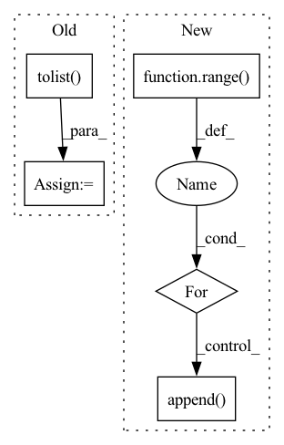

Pattern ID :24735

Before Change
:rtype: a ROS pose
ros_pose = ROS_Pose()
data = pose.data.reshape((-1,)).tolist()
ros_pose.data = data
ros_pose.confidence = pose.confidence
ros_pose.id = pose.id
After Change
ros_pose.source_img = image
data = pose.data
keypoints = Detection2DArray()
for i in range(data.shape[0]):
keypoint = Detection2D()
keypoint.bbox = BoundingBox2D()
keypoint.results.append(ObjectHypothesisWithPose())
keypoint.bbox.center = Pose2D()
keypoint.bbox.center.x = data[i][0]
keypoint.bbox.center.y = data[i][1]
keypoint.bbox.size_x = 0
In pattern: SUPERPATTERN
Frequency: 3
Non-data size: 5
Instances
Fragment ID: 76603809
Project Name: opendr-eu/opendr
Commit Name: d7c1cc6877998d39325d38c640fba65b5241446d
Time: 2021-05-06
Author: passalis@csd.auth.gr
File Name: projects/opendr_ws/src/ros_bridge/src/opendr_bridge/bridge.py
M Class Name: ROSBridge
N Class Name: ROSBridge
M Method Name: to_ros_pose(3)
N Method Name: to_ros_pose(2)
M Parent Class:
N Parent Class:
M File Name: projects/opendr_ws/src/ros_bridge/src/opendr_bridge/bridge.py
N File Name: projects/opendr_ws/src/ros_bridge/src/opendr_bridge/bridge.py
M Start Line: 68
M End Line: 74
N Start Line: 62
N End Line: 92
'>
Before Change
self.labels_first = self.labels_first + labels_first.cpu().tolist()
self.labels_second = self.labels_second + labels_second.cpu().tolist()
self.preds_first = self.preds_first + preds_first.cpu().tolist()
self.preds_second = self.preds_second + preds_second.cpu().tolist()
def get_metric(self, reset=True):
total = 0
match = 0
After Change
self.start_logits_list = self.start_logits_list + start_logits.cpu().numpy().tolist()
self.end_logits_list = self.end_logits_list + start_logits.cpu().numpy().tolist()
feature_list = []
for i in range(len(batch["example"])):
feature1 = {
key:value[i].cpu().tolist() for key,value in batch.items() if key != "example" and key != "additional_info"
}
feature2 = vars(batch["additional_info"][i])
feature_list.append(Namespace(**feature1,**feature2))
self.feature_list = self.feature_list + feature_list
self.example_list = self.example_list + batch["example"]
def get_metric(self, reset=True):
'>
Fragment ID: 76603799
Project Name: cognlp/cogktr
Commit Name: 75a2464205781e0b69dc20cf8a275ebb9b7c22af
Time: 2022-06-27
Author: 1208314139@qq.com
File Name: cogktr/core/metric/base_reading_comprehension_metric.py
M Class Name: BaseMRCMetric
N Class Name: BaseMRCMetric
M Method Name: evaluate(4)
N Method Name: evaluate(5)
M Parent Class: BaseMetric
N Parent Class: BaseMetric
M File Name: cogktr/core/metric/base_reading_comprehension_metric.py
N File Name: cogktr/core/metric/base_reading_comprehension_metric.py
M Start Line: 15
M End Line: 19
N Start Line: 18
N End Line: 28
'>
Before Change
os.path.join(output_dir, f"round_{idx}"), "bias_table.csv"))
bias_table["example_id"] = bias_table["example_id"].map(
lambda x: eval(x).decode("UTF-8")) // pylint:disable=eval-used
ids = np.concatenate(list(
ds.map(lambda example: example["example_id"]).batch(
batch_size).as_numpy_iterator())).tolist()
ids = list(map(lambda x: x.decode("UTF-8"), ids))
subgroup_labels = list(
ds.map(lambda example: example["subgroup_label"]).batch(
batch_size).as_numpy_iterator())
After Change
os.path.join(
os.path.join(output_dir, f"round_{idx}"), "bias_table.csv"))
predictions_merge = merge_subgroup_labels(ds, bias_table, batch_size)
for subgroup_id in range(num_subgroups):
prob_i = (predictions_merge["subgroup_label"]
== subgroup_id).sum() / len(predictions_merge)
round_idx.append(idx)
subgroup_ids.append(subgroup_id)
num_samples.append(len(predictions_merge))
prob_representation.append(prob_i)
return pd.DataFrame({
'>
Fragment ID: 76603800
Project Name: google/uncertainty-baselines
Commit Name: f5b53459d654b40668528e806a24776b53864278
Time: 2022-11-03
Author: no-reply@google.com
File Name: experimental/shoshin/evaluate_model_lib.py
M Class Name: AnonimousClass
N Class Name: AnonimousClass
M Method Name: evaluate_active_sampling(5)
N Method Name: evaluate_active_sampling(4)
M Parent Class:
N Parent Class:
M File Name: experimental/shoshin/evaluate_model_lib.py
N File Name: experimental/shoshin/evaluate_model_lib.py
M Start Line: 34
M End Line: 59
N Start Line: 68
N End Line: 92